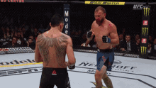
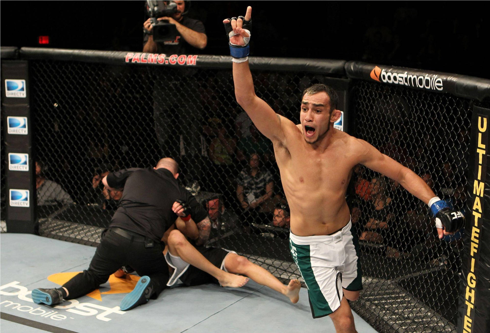
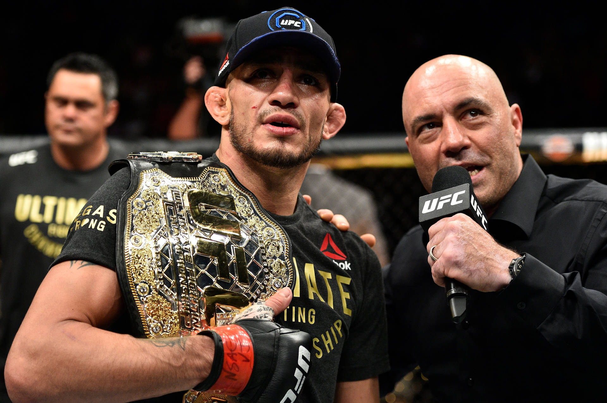

Kuvagalleria





Tony Ferguson on amerikkalainen vapaaottelija ja yksi UFC lightweight divisioonan tunnetuimmista ottelijoista. Hän tuli tunnetuksi voitettuaan The Ultimate Fighter 13 -kauden vuonna 2011. Tämän jälkeen hän aloitti legendaarisen voittoputken UFC:ssä ja nousi fanien suosikiksi.
Tony Ferguson on amerikkalainen vapaaottelija ja yksi UFC lightweight divisioonan tunnetuimmista ottelijoista. Hän tuli tunnetuksi voitettuaan The Ultimate Fighter 13 -kauden vuonna 2011. Tämän jälkeen hän aloitti legendaarisen voittoputken UFC:ssä ja nousi fanien suosikiksi.
Tony Ferguson tunnetaan erittäin omaperäisenä ja karismaattisena persoonana. Hän käyttää psykologista peliä vastustajiaan vastaan ja harjoittelee usein epätavallisilla tavoilla kuten metalliputkien lyömisellä ja tasapainoharjoituksilla. Fanien keskuudessa hän on arvostettu, koska hän ei koskaan luovuta ottelussa. Hän on myös puhunut avoimesti elämässään kokemistaan vaikeuksista ja mielenterveyden haasteista.
Ferguson voitti interim lightweight mestaruuden vuonna 2017 ja hänen 12 ottelun voittoputkensa on yksi divisioonan historian pisimmistä. Hänen ottelutyylinsä perustuu paineeseen, kestävyyteen ja luovuuteen. Vaikka uran loppupuolella tuli tappioita, hänen vaikutuksensa MMA-maailmaan on edelleen valtava.


Legendaarinen ottelu Anthony Pettisiä vastaan UFC 229 tapahtumassa oli yksi viihdyttävimmistä lightweight-otteluista koskaan.
| Tulos | Vastustaja | Tapa | Tapahtuma | Vuosi |
|---|---|---|---|---|
| L | Paddy Pimblett | Decision | UFC 296 | 2023 |
| L | Bobby Green | Submission | UFC 291 | 2023 |
| L | Nate Diaz | Submission | UFC 279 | 2022 |
| L | Michael Chandler | KO | UFC 274 | 2022 |
| L | Beneil Dariush | Decision | UFC Fight Night | 2021 |
| L | Charles Oliveira | Decision | UFC 256 | 2020 |
| L | Justin Gaethje | TKO | UFC 249 | 2020 |
| W | Donald Cerrone | TKO | UFC 238 | 2019 |
| W | Anthony Pettis | TKO | UFC 229 | 2018 |
| W | Kevin Lee | Submission | UFC 216 | 2017 |
| W | Rafael dos Anjos | Decision | TUF Finale | 2016 |
| W | Lando Vannata | Submission | UFC FN | 2016 |
| W | Edson Barboza | Submission | TUF Finale | 2015 |
| W | Josh Thomson | Submission | UFC FN | 2015 |
| W | Danny Castillo | Decision | UFC 177 | 2014 |
| W | Katsunori Kikuno | TKO | UFC 173 | 2014 |
| W | Mike Rio | Submission | UFC 166 | 2013 |
| W | Ramsey Nijem | KO | TUF Finale | 2012 |
| W | Aaron Riley | TKO | UFC 135 | 2011 |
| W | Brock Jardine | Submission | PureCombat | 2010 |
| W | Rudy Bears | Submission | MFN | 2010 |
| L | Jamie Toney | Submission | MFN | 2009 |
| W | Chris Kennedy | TKO | MFN | 2009 |
| W | Joe Schilling | Decision | Independent | 2008 |